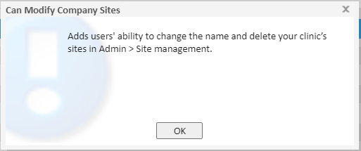
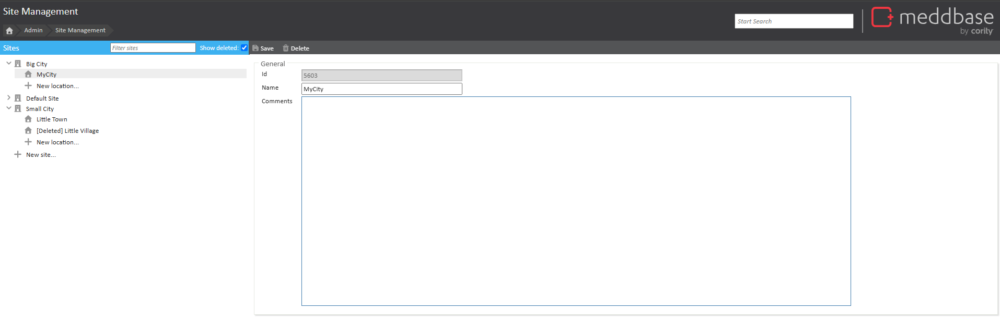
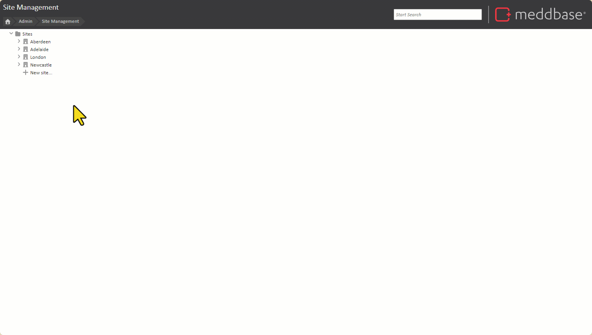
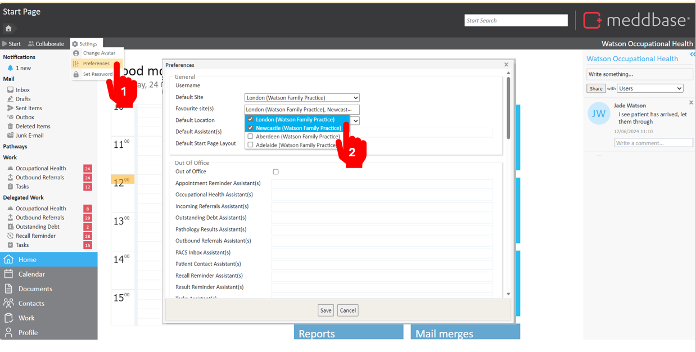
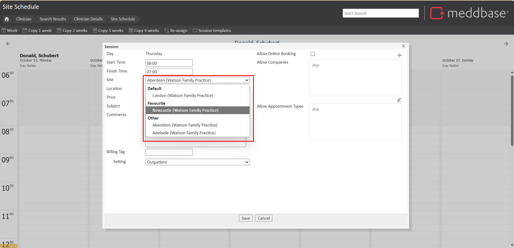
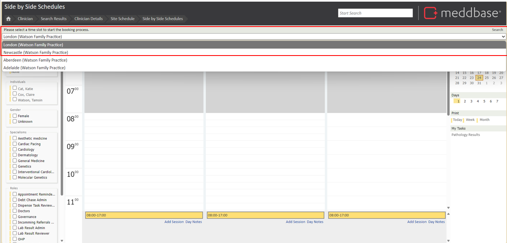
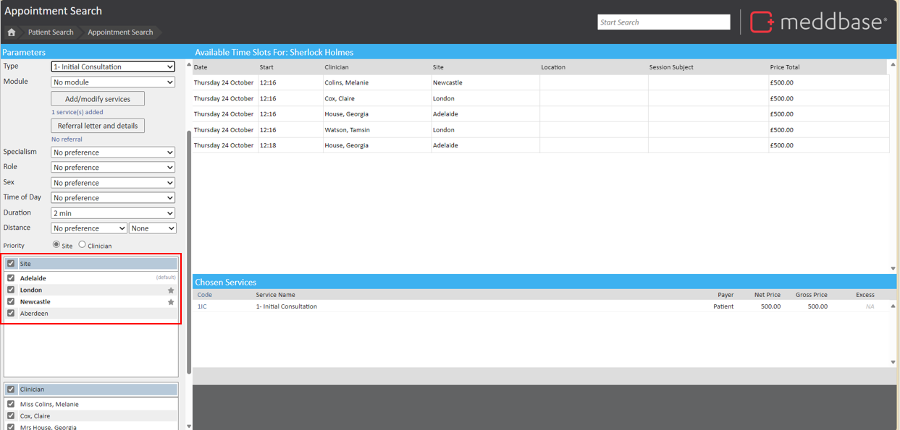

Meddbase is capable of managing multiple sites with several locations (or rooms) per site.
This article will guide you through how to create a new site and add locations within a site, where to view these sites and locations; how to mark your favourite sites.
Access to the Site Management management tile is governed by the Can Modify Company Sites permissions on the Default Company Policy.

To navigate to the Site Management tile, go to Admin > Site Management. From here you will see your sites listed. You can search for Sites and optionally, choose to display Sites that have been deleted. Deleted Sites are prefixed with '[Deleted]'.

Take the following steps to add a new site:
The contents of the Comments field can be pulled directly into your emails and templates. Comments can be used for displaying site-specific instructions such as details of where the clinic is located.

If you operate a clinic with multiple rooms then you may wish to specify locations for appointments.
To add a new location, take the following steps:
Sites and locations are now visible when creating availability in Site Scheduler on a Clinician's Record, where you can set availability for clinicians' schedules at different sites and locations.
You can view sites from the Side by Side Scheduler, Slot Finder or the Room tile.
It is now possible to favourite sites. This is particularly helpful if you run clinics across multiple sites where you will be able to choose to book an appointment from your favourite sites more easily than having to scroll and locate them in a list.
Your default site will always appear top of any list, followed by your favourite sites.
To set your favourite sites, from the start page go to Settings > Preferences. Then Select Favourite Sites and select your choices from the list. Once you have completed this step, press save.

Your favourite sites will be visible when interacting with the setting of sites for actions such as Site Scheduling (Creating availability for a clinician), Navigating the Side-By-Side scheduler; booking an appointment in the Slot Finder and Booking an appointment via Rooms.
Site Scheduler:
When creating sessions in the Site Scheduler, you will be able to view your default site, favourite sites followed by other sites in the drop-down.

Side-by-side scheduler
In the side-by-side scheduler, when navigating to different sites, your favourite sites will be located at the top of the list.

Slot finder
When booking an appointment via the slot finder, your favourite sites will be shown in Bold and marked with a ★.
